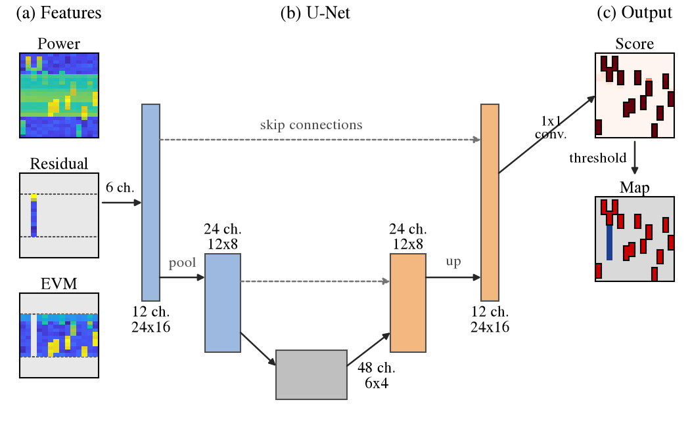
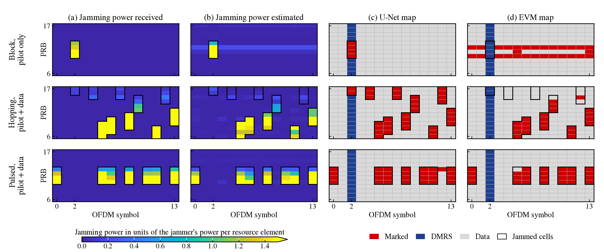

Generated by python -m jamloc.experiments.figures; PDFs for the paper are next to each PNG.
Explanatory figures
system_diagram: Not produced yet - run python -m jamloc.diagrams

unet_process: The U-Net on one slot of the hopping jammer on pilots and data (+6 dB JSR, 15 dB SNR, TDL-C, the UE on PRBs 6-17 dashed). (a) The received power, the pilot residual and the EVM of every cell of the carrier, in dB on their own colour scales. (b) The network, with blocks drawn to the size of their grid and channel count. (c) The score of every cell and the map after the threshold, with the jammed cells outlined. The map marks 56 of the 56 jammed cells, misses 0 and marks 0 clean cells.
jamming_estimates: Not produced yet - run python -m jamloc.experiments.figures --only jamming_estimates

attack_maps: One slot under three attacks at +6 dB JSR and 15 dB SNR (TDL-C, the UE on PRBs 6-17), with the jammed cells outlined. Columns (a) and (b) show the jamming power that reached each cell and the power the receiver assigns without a map, from shrinkage on the data cells and from the pilot residual on the DMRS cells, in units of the jammer's power per resource element. The U-Net misses 0, 0, 0 jammed cells and the EVM threshold marks 28, 0, 0 cells the jammer never touched, row by row.
shrinkage_example: Not produced yet - run python -m jamloc.experiments.figures --only shrinkage_example
after_decoding: Not produced yet - run python -m jamloc.experiments.figures --only after_decoding
system_views: Not produced yet - run python -m jamloc.experiments.figures --only system_views
data_aided_passes: Not produced yet - run python -m jamloc.experiments.figures --only data_aided_passes
attack_patterns: Not produced yet - run python -m jamloc.experiments.figures --only attack_patterns
residual_explained: Not produced yet - run python -m jamloc.experiments.figures --only residual_explained
constellations: Not produced yet - run python -m jamloc.experiments.figures --only constellations
feature_distributions: Not produced yet - run python -m jamloc.experiments.figures --only feature_distributions
detector_outputs: Not produced yet - run python -m jamloc.experiments.figures --only detector_outputs
training_curves: Not produced yet - run python -m jamloc.experiments.figures --only training_curves
constellations_with_map: Not produced yet - run python -m jamloc.experiments.figures --only constellations_with_map
Results
BER/BLER sweep, TDL-A: Not produced yet - run python -m jamloc.experiments.ber_bler --channel A
BER/BLER sweep, TDL-C: Not produced yet - run python -m jamloc.experiments.ber_bler --channel C
Feature maps of one slot per attack: Not produced yet - run python -m jamloc.experiments.feature_maps
Detection, test set: Not produced yet - run python -m jamloc.evaluate --split test
Detection, all jammed cells: Not produced yet - run python -m jamloc.evaluate --split test
Detection, scheduling-aware jammer: Not produced yet - run python -m jamloc.evaluate --split sched
Detection at SNR 5-15 dB: Not produced yet - run python -m jamloc.evaluate --split test --snr-db 5 15
Detection at SNR 15-25 dB: Not produced yet - run python -m jamloc.evaluate --split test --snr-db 15 25
Map-aware recovery, TDL-A: Not produced yet - run python -m jamloc.experiments.recovery --channel A
Recovery ablation, TDL-A: Not produced yet - run python -m jamloc.experiments.recovery --channel A
Map-aware recovery, TDL-C: Not produced yet - run python -m jamloc.experiments.recovery --channel C
Recovery ablation, TDL-C: Not produced yet - run python -m jamloc.experiments.recovery --channel C
The DMRS residual against its theory: Not produced yet - run python -m jamloc.experiments.residual_theory
Conditions never seen in training: Not produced yet - run python -m jamloc.experiments.generalization
Mixed training against unseen conditions: Not produced yet - run python -m jamloc.experiments.robust_training
How small can the U-Net be?: Not produced yet - run python -m jamloc.experiments.size_sweep
Detection before damage: Not produced yet - run python -m jamloc.experiments.detection_margin
False alarms across SNR and under noise-estimation error: Not produced yet - run python -m jamloc.experiments.calibration
Averaging the residual over several slots: Not produced yet - run python -m jamloc.experiments.multislot
Smarter jammers and attack-mixed training: Not produced yet - run python -m jamloc.experiments.attack_training